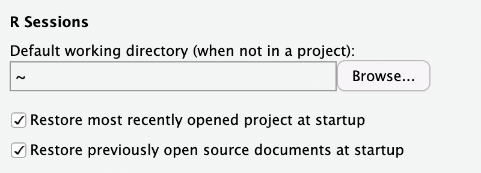
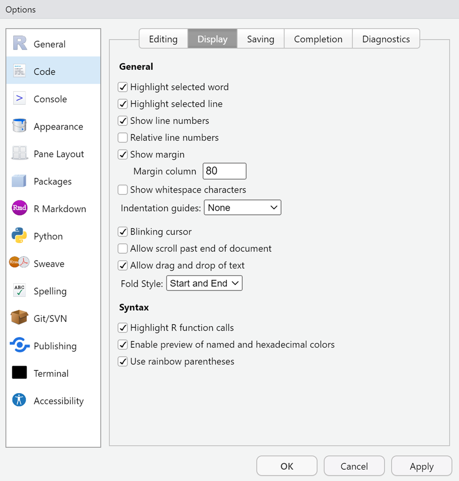

Installing R & RStudio
Overview
For this course, we will use the R programming language and the RStudio IDE for manipulating data and creating data visualizations.
To Do
Tasks
The first step is to install these pieces of software so that you can use them.
- Download and Install
R - Download and Install
RStudio - Configure
RStudio
Readings
Determine the version of your computer’s operating system
Your version of operating system will dictate which version of R to download and install. Make note of your computer’s operating system.
Windows systemsare easier and Windows 10 and 11 operating systems will both use the same R versions.
Macs are somewhat more complicated. The version depends on your cpu. Here is how you can determine:
There will be two cpu options, Intel 64-bit for macOS 10.13 or Apple silicon arm64 for macOS 11 and higher.
Cloud Options:
If you do not have a laptop (let me know) or do not have 5GB of hard drive space available on your computer, you might consider a cloud version of the software. One is maintained by Posit (formerly RStudio) and the other is maintained by CMC.
Posit (25 free compute hours a month – make time out)
Remote Desktop Protocol (No limit on compute hours) (contact me if interested)
Download R
Once you know your processor, navigate to https://cran.r-project.org/ and in the “Download and Install R” section, select your operating system. You can also select from below and follow the indented sections that follow.
Windows users should select the base version of R and download version 4.3.2 (no other version) to your computer. If this version is not on the main page, go to the “Other Builds” section and select “previous releases” and download the correct version.
Mac users should download either R-4.3.2.pkg or R-4.3.2x86_64.pkg version depending on the cpu noted earlier. Do not download any version other than 4.3.2 and please do not update throughout the semester.
Download RStudio
Use the urls below to download RStudio and save it to the same directory location on your computer as you saved R.
Windows 10/11: https://download1.rstudio.org/electron/windows/RStudio-2023.12.0-369.exe
MacOS 12+: https://download1.rstudio.org/electron/macos/RStudio-2023.12.0-369.dmg
MacOS 10.15-11: https://s3.amazonaws.com/rstudio-ide-build/electron/macos/RStudio-2023.09.1-494.dmg
Linux: go to https://posit.co/download/rstudio-desktop/
Note: If you have a 32bit operating system, you will need to install an older version: https://www.rstudio.com/products/rstudio/older-versions/
Install R and RStudio on your Computer
Install R first and then install RStudio
Installing should be easy and you can accept all of the defaults although the desktop icons are not needed, especially for R because you will never need it; RStudio will find R for you. You can follow these videos for simple installing.
PC: How to Install R and R Studio on Windows 10/11
Mac: Installing R and RStudio on a Mac
Note: If you leave the desktop icon for R, you can remove that later. You will never need it because RStudio will find R for you.
Additional Step for Mac Users:
Download and Install XQuartz
Some functions in R require an “X11 Server” and/or libraries associated with an X11 server. Apple does not provide this software with OS X anymore so unfortunately you have to do it on your own via a third-party application called XQuartz for OS X 10.9 or later.
Use the url below to download the XQuartz file and save it to your computer. Follow the same install instructions as above for installing the XQuartz file.
For macOS 10.9 or later, download this XQuartz file and save it to your computer and install: https://github.com/XQuartz/XQuartz/releases/download/XQuartz-2.8.5/XQuartz-2.8.5.pkg
Verify that RStudio is communicating correctly with R
Launch the RStudio application.
If RStudio and R are communicating correctly, you should see an RStudio window open with the R console opened which should look similar to that shown below. Your R version should be listed at the top of the console (4.3.2).
Configure RStudio
A. Go to Tools > Global Options under the General + Basic Tab

R Sessions > R version: There should be a path to the installed R version listed if you installed R before RStudio. You should not need to change this unless you have another version installed on your system. If you do have multiple versions, browse to version 4.3.2. Do not update R or any libraries during this course.
Mac Users may not see an R version and may only see the following:

If you are concerned that R may not be there, type 2 + 2 into the R console and press Enter/Return. If the solution is returned, then R is installed.
B. Other options: Check the other check boxes as indicated in the images below.
GENERAL (basic):

CODE (editing):

CODE (display):

CODE (saving):
CODE (completing):

CODE (diagnostics):

CONSOLE:
APPEARANCE:
This one of preference. You can try out different RStudio Themes and Editor Themes to see what you like. You will see that I use the Merbivore Editor Theme with Lucida Console font.
OTHERS: We will address in class as appropriate.
Install some packages
After you have set up the install, you should install different libraries that we will use a various times in the course. Rather than installing them manually, copy the code below, paste it into the RStudio Console window at the > prompt (see image), and then press enter.
Copy this code:
source("https://raw.githubusercontent.com/slicesofdata/fods24/main/r/psyc166_libraries.R")Paste code into your R console at the > prompt:
The install process will take quite some time especially depending on your computer so do this at a time you do not want to use your system. Take a break and do something else.